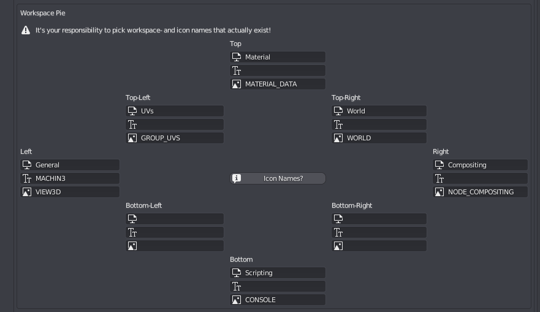

Workspace Pie
shortcut Pause
The Workspace Pie is used to quickly change from one workspace to another
Viewport Syncing
When you switch workspaces using the pie, MACHIN3tools will also sync the viewport, which primarily alleviates disorientation, which can otherwise occur, as each workspace in Blender has its own independent viewport origin and orientation.
So you may be looking at one model in the Modelling workspace, but when you switch to your UV workspace, you are suddenly looking at a completely different object.
Keep in mind
Unfortunately Local View/Focus states are currently not synced.
Alternative Workspaces
The tool can optionally also switch between alternative workspaces.
For instance, I like to setup light weight alternatives to some workspaces, where the alternative version is still used for the same task, but has less clutter.
To setup an alternative workspace, just name it like the original one, but add the suffix .alt.
You can now repeatedly pick the same layout in the pie, to toggle between the original and the alternative.
Note
In addition to the viewports origin and orientation, switching to an alternative workspace or back, will also sync various shading and overlay settings as well as the active tool.
This behavior can also be forced via the ALT mode key, when switchting to a completely different workspace.
Preferences
You can customize the Workspace Pie in the addon preferences.
For each of the 8 pie slices, you can define the workspace name, and optional custom label, as well as an optional icon.
Use the button in the center to find out what icon choices are available.
 only the workspace name is mandatory, leave it blank to not display anything